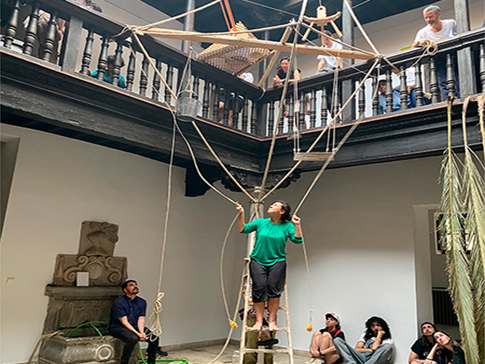
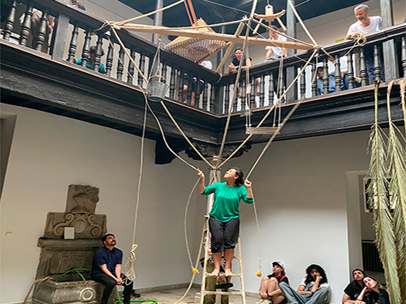

Este es un podcast de Imaginar nuevas Europas . Una iniciativa que da cuenta de la colaboración entre diversas comunidades e instituciones en la generación de nuevas formas de vida en común en el contexto cultural español.
Construyendo la Europa del futuro.
Lo vivo · lo pueblo · lo jondo: geopsiquias del Albaicín.
La Madraza. Centro de Cultura Contemporánea.
Granada.
1. La filosofía del arabesco. Toda idea tiene una nota vibrante, un marbete que sirve para reconocerla. Toda interpretación, todo esfuerzo de atención consiste no en apoyarse sobre las palabras percibidas para comprender por deducción, sino en buscar entre ellas un detalle que vibre con otro detalle que llevamos dentro
2. Una persona sin papeles se quema a lo bonzo. Una persona de 34 años, sin hogar, de origen serbio, que esperaba ser expulsada del país, se quemó a lo bonzo la mañana del 15 de enero de 2015, en el campanario de la iglesia de San José. Los vecinos intentaron dar la voz de alarma, pero murió en el hospital debido a las quemaduras en el 85% de su cuerpo.
6. El último campanero. Tote de alborada, tote de alzar, tote de ánimas, tote de becerras, tote de consejo, tote de corpus, tote de fiesta, tote de emergencia, tote de tormenta, tote de muerte de hombre, tote de muerte de mujer, tote de muerte de niño, tote de minerva, tote de misa, tote de oración, tote de rogativa, tote del señor.
15. Muerte y muerte y muerte. Aire para tu boca, agua para tu amor, fuego para tu ceniza, tierra para tu alma.
17. Nacidos de la tierra. En las miniaturas de las Cánticas 17 y 89 se observan perfectamente dos posturas maternas para el parto. En la Cántica 17, la mujer, apoyada en una columna, está pariendo arrodillada, realizando seguramente el pujo típico del periodo expulsivo, ayudándose además de una soga que pende del techo de su habitación para aumentar la fuerza de expulsión.
20. Fuerza orgásmica uterina. El acercamiento constante del continente africano a Europa como si fuera un beso geológico es el motor de los ismos en el sur de la península. Pero la gasolina del enjambre de movimientos telúricos sufrido en Granada a partir del 23 de enero y de otros terremotos que se registran en la franja meridional española la aportan las múltiples fallas que se suman a las características del suelo. Todo ello agrava los temblores, aunque geológicamente se consideren de poca intensidad. Estas circunstancias hacen que más de 14 millones de españoles vivan en áreas de riesgo alto o muy alto. La historia de ese ismo lo confirma. El registro de terremotos a lo largo de un milenio define un mapa de peligro en torno a los bordes de las placas continentales, la costa este y los Pirineos.
24. Bosque sexual. Así, puesto que la tierra es carne de Dios, haz lo que la tierra. Contempla sus misterios, alumbre a tú mismo como alumbre a ella.
45. Cambiar las piedras del lugar para construir un lugar. Granada ama lo diminuto y, en general, toda Andalucía. El lenguaje del pueblo pone los verbos en diminutivo. Nada tan incitante para la confidencia que el amor. El diminutivo no tiene más misión que la de limitar, ceñir, traer a la habitación y poner en nuestra mano los objetos e ideas de gran perspectiva. Se limita el tiempo, el espacio, el mar, la luna, las distancias y hasta lo prodigioso, la acción. Por eso la estética genuinamente granadina es la estética del diminutivo, la estética de las cosas diminutas. Las creaciones justas de Granada son el camarín y el mirador de bellas y reducidas proporciones, así como el jardín pequeño y la estatua chica.
50. Paciamientos. Ante las dificultades para a los soldados y tras un breve debate legal y teológico a inicios de 1569, se justificaba trocar la pena de muerte por la legalización de la esclavitud para todos los rebelados, a pesar de estar bautizados y ser vasallos del Rey Católico, con la excepción teórica, pero no de facto, de los niños menores de 10 años y medio y las niñas menores de 9 años y medio. Este punto es fundamental porque la medida permitió la creación de un gigantesco mercado esclavista con elevadas cotas de especulación, que en los años subsiguientes al conflicto implicaría a unas 30.000 personas, la mayoría mujeres y niños, que fueron vencidos fuera del reino.
52. La ciudad que desaparece. ¿Podemos figurarnos la cantidad de casitas humildes, de rincones pintorescos, de detalles desaparecidos en el silencio, sin que de ellos haya quedado ni el recuerdo? ¿Y todas estas casitas moriscas del Albaicín, minúsculas, recatadas, cuyas humildes fachadas no revelan nunca la gracia refinada de sus interiores. Todas estas casitas, conservadas milagrosamente desde el siglo XV, alberguen entonces de los musulmanes sometidos, que contemplarían melancólicamente desde sus galerías y cenadores, la magnificencia de las torres de la Alhambra, en poder de otra raza y bajo el símbolo de otra religión ¿Hasta cuándo estarán en pie?
Número 56. Resistir es recrear. El jueves 20 de marzo a las 6 de la mañana, 50 agentes antidisturbios de la Policía Local de Granada tomaron por sorpresa el cerro de San Miguel para desalojar y clausurar seis cuevas en las que vivían familias alegando peligro de ruina. Doce horas después, los vecinos de todo el cerro se unían para empezar a desenterrarlas. La noche del viernes al sábado, mientras una pareja ya dormía de regreso en su vivienda, otros apostaban con tiendas de campaña en la cercana ermita de San Miguel, en cuya explanada aparecieron los agentes dos días antes. Al final de esta semana, todas las cuevas desalojadas estaban habitadas de nuevo y el barrio se organizaba para resistir.
59. Pasaeras. A finales del mes de junio, el bar de San Pedro, en el bajo Albaicín, celebra sus fiestas patronales. Una de las diversiones más esperadas de la fiesta era la celebración de las pasaeras o pasaderas del bar del Darro. El juego consistía en cruzar el cauce del río sobre unas tablas o sobre unas piedras jabulanas debidamente untadas con jamón o sebo, hasta hacerlas muy resbaladizas ¿Quién como Dios? En 1750 una gran sequía arruinó las cosechas. Se decidió entonces bajar a San Miguel en rogativas rodeadas por las cofradas de su hermandad. Y al llegar a la Plaza Nueva, una salva de artillería y repique de la campana de la Torre de la Vela acompañó el paso de la procesión. Cuentan que se obró el milagro y ese mismo día llovió, una lluvia que ha acompañado en alguna ocasión a la romería y no era raro ver a membrillo, acerola y tenderetes bajar a rauro, empujados por la fuerza del agua por las costas del Albaicín.
70. La cabra tira pal monte. Nunca fue tan cierto que las calles de Granada eran de sus vecinos, una especie de extensión de sus paupérrimas viviendas. A las calles sacaban los bancos de trabajo. En las calles dejaban carros y caballerías. En las calles jugaban los niños a la pelota. Por las calles rumiaban vacas y cabras para que sus pastores las ordeñasen y vendieran la leche. En las fuentes y pilares lavaba la gente tanto la ropa como las verduras. En las calles organizaban infinidad de mercadillos quienes tenían algo que vender, etcétera. Pues todo lo anterior se reguló prohibiéndolo y sancionándolo por parte de los agentes municipales. Los granadinos se resistieron, pero las sanciones comenzaban a ser efectivas. Los caballos ya no podían dejarse días enteros amarrados a las rejas, se dejó de correr o galopar por las calles anchas. A las vacas lecheras se les impidió andar por las calles enlosadas, sólo por las terrizas. La paja no se podía acumular en las puertas de un día para otro. Los artesanos debieron meterse a trabajar a cubierto. Los niños no pudieron jugar a pelota contra los edificios públicos y notables, etcétera.
74. Vale Rojo. La presencia de un cuartel en el barrio tenía una justificación clara para las autoridades franquistas: establecer un lugar de control y represión sobre los vecinos del único barrio que había resistido heroicamente desde el 20 al 23 de julio de 1936 al golpe de estado fascista. El barrio Obrero había sido la cuna del movimiento anarcosindicalista de Granada y de él procedían la inmensa mayoría de sus dirigentes, también de la FAI. Y en él se cepó la represión consiguiente con miles de detenidos, encarcelados y fusilados en las tapias del cementerio de San José. No hay calle en el Albaicín que no tenga algún familiar represaliado.
84. Pólvora y dinamita. La inexpugnable factoría de munición del FARE es la guardiana de los secretos de la defensa nacional y esconde curiosidades como el origen de la FP en España. Ya por aquella época el trabajador defendía sus derechos con determinación. No solo ellos, las mujeres que echaban horas en la fábrica no encajaban bien los atropellos. Así podemos encontrar un suelto informativo con más de un siglo de antigüedad en el que se da cuenta de la huelga protagonizada por un grupo de 50 mujeres que vieron rebajados sus sueldos. A los pocos días se dio por terminado el conflicto laboral después de que los responsables de la fábrica sedieran a abonar tres pesetas por cada 100 paquetes de pólvora. Anarcosindicalistas, ¿y qué ofrecía la iglesia a la modesta población del Albaicín? ¿A sus jornaleros, artesanos y mujeres condenadas a una estrecha asistencia? Pues poco más que resignación y llamamientos al respeto del orden establecido. Los premios llegarían tras la muerte. Tan burdo planteamiento era repetido una y otra vez por el clero sin que desde luego evitara la continua sangría de los feligreses en las parroquias del Albaicín, que poco a poco se había ido convirtiendo en el barrio más anticlerical de la ciudad.
86. Barricadas. Desde el primer momento, las nuevas autoridades convirtieron el catolicismo en uno de sus estándares ideológicos. Todo un programa de cristianización de la ciudad se pondrá en marcha, y las comparaciones con la toma de esta en 1492 del conflicto incluso con la guerra de Alacujarra o de Francisco Franco con los reyes católicos de Felipe II serán el pan de cada día en el diario ideal. Procesiones, misas multitudinarias y otros actos religiosos se sucederán sin descanso. No es pues de extrañar que se elabore un programa de reconstrucción de los templos y cruces, destruidos por los disturbios del quinquenio republicano, o que se anuncie la creación de un taller de imaginería religiosa.
88. Cuando llovió sin parar durante tres meses. Durante tres meses las lluvias fueron las protagonistas en la capital, siendo el Sacromonte la zona más afectada debido al tipo de viviendas en las que habitaban, las cuevas. Hubo historias trágicas que fueron clave para el desalojo de los vecinos de este barrio humilde, como la de la muerte de un padre y su hijo de tres años, sepultados por su propia cueva que finalmente se vino abajo. Los testimonios de las personas que tuvieron que irse de sus casas, como ocurrió Albaicín, ponen en valor lo difícil de la situación. Se tuvo que dar cobijo a 7.000 personas aproximadamente que fueron evacuadas albergue, barracones y otras viviendas provisionales pero que continuaron durante años. Fue tal la tragedia que incluso Franco se personó allí, visitando a las familias que tuvieron que abandonar su hogar.
92. Pozo Ayron. Caer en el pozo Ayron. Frase con que se va a entender que alguna cosa que se ha perdido no es fácil de hallarla o sacarla de donde está. Y viene de que en Granada había un pozo a quien llamaron Ayron, porque siempre echaba de sí bocanadas de aire y era tan profundo que costó muchos años de tiempo y trabajo para cerrarlo.
94. Libros Plumbeo. La crítica filológica e histórica parece determinar que el imposturo pudo ser obra de moriscos de alta posición social que intentaban conciliar el cristianismo con el islam en el periodo posterior a la rebelión de las Albuharras. Ya en esa época Luis Tribaldo de Toledo los consideró falsificaciones, pero el arzobispo Pedro Vaca de Castro promovió en su educa distintas traducciones que aumentaron la confusión hasta que en 1682 fueron declarados falsos y heréticos por el Papa Inocencio XI. Pero sí se mantuvo la validez de las reliquias que aparecieron junto a los libros. Estos fueron llevados a Roma, donde permanecían hasta el año 2010, en que fueron devueltos al archidiócesis de Granada. Según Julio Caro Baroja, en el famoso asunto de los plomos del Sacromonte intervinieron moriscos conocedores del idioma árabe, que demostraban tener una fuerte convicción cristiana, al menos exteriormente. Los escritos apócrifos que componen el núcleo central de la falsificación parecen responder, en parte, a un intento de aproximar ciertos elementos de la tradición islámica a la fe cristiana.
La 26 es la mística. Quiero verte en los lugares todos, buscar el agua del abismo, hermana, morir de Dios por la descarga eléctrica, desquiciarme de amor, soñar lo que seamos. Tonto, Dios está en ti, búscalo en tu cubo de basura. Fisión y fusión, la misma cosa, mira a tu alrededor y descubre la potencia eterna. Ojalá que te ayude a saltar fuera de nuestro yo, de nuestro día, de nuestro orden. Ojalá que te ayude a respirar y arder sin dejar rastro.
100. El cornezuelo del centreno. El cornezuelo o ergot Claviceps purpurea es un hongo parasítico del género Claviceps que consta de más de 50 especies. Todas ellas pueden afectar a una gran variedad de cereales y hierbas, aunque su oxidante más común es el centeno. Cuando el núcleo del cornezuelo se deposita en la tierra, permanece en estado letárgico o esclerocio hasta que se dan las condiciones propicias para medrar y pasar a la fase fructífera, en la que se desarrolla como una minúscula seta y libera la depor a fungida. Entre los científicos que estudiaron este hongo y sus derivados se encuentra Albert Hofmann, cuyos experimentos lo encaminaron al descubrimiento de la dietilamida del ácido lisérgico, LSD, un poderoso enteógeno derivado del cornezuelo que afecta al sistema serotoninérgico. El cornezuelo se utilizó para inducir abortos y detener la hemorragia uterina tras el parto pero la actualidad se ha sustituido por sustancia sin relicación.
101. Underground. Hundió la sala, tiró de la ramaje con cuidado patata patata baluca batata o castaña de tierra manzana de tierra, etc. Nos libraba del hambre en tiempos de miseria ¿Cómo se agarran catorce o veinte? De allá unas pobres rizomas, delgaditas peludas que se mueren, de flacas por darlas de comer. Hundió la azada, tiró de la ramaje, con cuidado como si no quisiera, que ninguno de los hijos que tenía escondido en el monte se los dañara. No se puede vivir ahí dentro, ahí más bien se muere, pero fuera tampoco entiende una cómo es que crecen las cosas ni por qué. Los donizales tendrían que matar a las musarañas eran una pequeña comunidad underground apocaditas compartían el agua y los minerales.
Imaginar nuevas Europas es una iniciativa impulsada por la Oficina de Coordinación para la Presidencia española de la Unión Europea.
 
